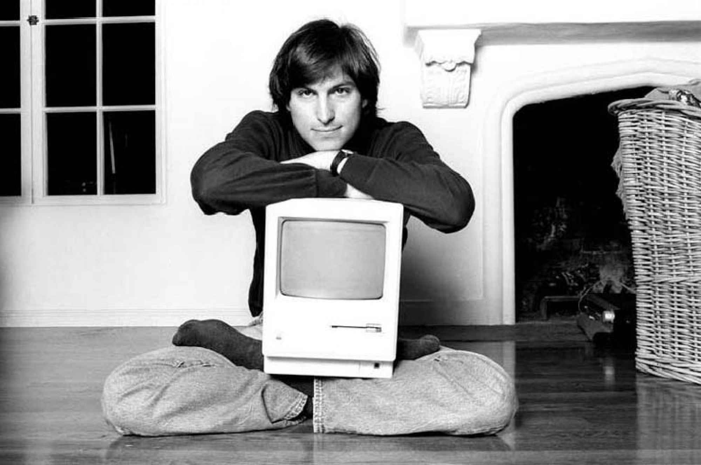
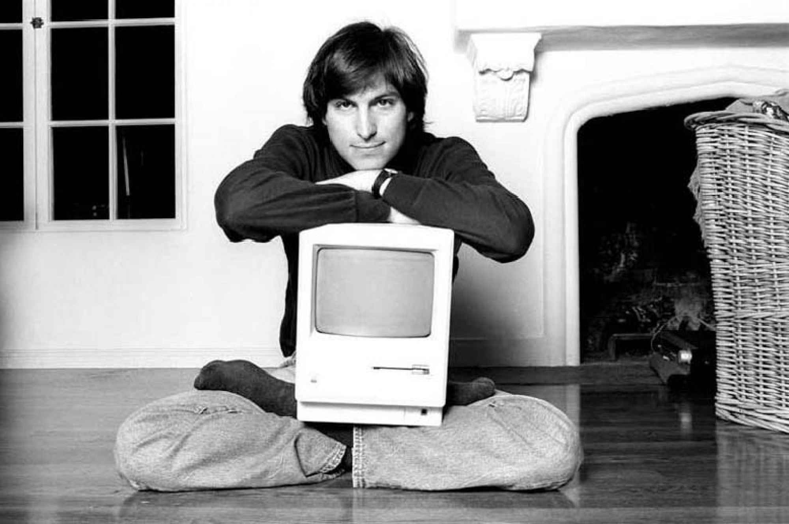

Steve Jobs
 


Stay Hungry-Stay Foolish.
Have the courage to follow your Heart and Intuition.
"Steven Paul Jobs was born on February 24, 1955."
Jobs's design aesthetic was influenced by philosophies of Zen and Buddhism.
In India, he experienced Buddhism while on his seven-month spiritual journey, and his sense of intuition was influenced by the spiritual people with whom he studied.
Although entirely designed by Steve Wozniak, Jobs had the idea of selling the desktop computer, which led to the formation of Apple Computer in 1976.
“Don’t let the noise of others’ opinions drown out your own inner voice."
“The only way to do great work is to love what you do. If you haven't found it yet, keep looking. Don't settle.”
Scott McNealy, one of the cofounders of Sun Microsystems, said that Jobs broke a "Glass Age Ceiling" in Silicon Valley because he'd created a very successful company at a young age.
Apple iMac G3 was introduced in 1998 and its innovative design was directly the result of Jobs's return to Apple.
iTunes is a media player, media library, online radio broadcaster, and mobile device management application developed by Apple.
Apple began work on the first iPhone in 2005 and the first iPhone was released on June 29, 2007.
“If you live each day as if it was your last, someday you’ll most certainly be right.”
Jobs died at his Palo Alto, California home on October 5, 2011.